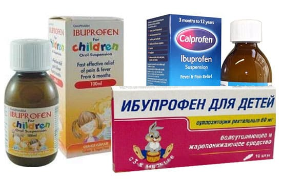
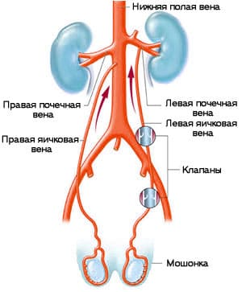

Боль и/или отек мошонки и яичек, естественно, могут сильно беспокоить мальчиков и их родителей. Существуют несколько причин этой проблемы, некоторые из них, которых требуют немедленного медицинского вмешательства, а другие- нет. Ниже приводится краткий список самых распространенных причин тих симптомов у детей и подростков мужского пола. Важно отметить, что любой мальчик, жалующийся на боль мошонке или яичках, должен быть немедленно осмотрен терапевтом.
ЭПИДИДИМИТ
Придаток яичка — это ткань, которая находится непосредственно рядом с каждым яичком. Эпидидимит — это воспаление придатка яичка. Он чаще всего встречается в возрасте от 5 до 30 лет и редко диагностируется мальчиков младшего возраста. У подростков и юношей самой распространенной причиной эпидидимита являются заболевания, передающиеся половым путем, такие как хламидиоз или гонорея. У детей воспаление придатков яичка, как правило, вызывается бактерией Е.coli (кишечная палочка), которая также вызывает цистит. У детей младшего возраста, которым поставлен диагноз эпидидимита, часто обнаруживаются структурные нарушения мочевого пузыря или мочеиспускательного канала. Ваш врач проведет анализ мочи и может взять другие анализы, чтобы определить вид бактерий, вызвавших эту инфекцию.
СИМПТОМЫ
Самым распространенным симптомом эпидидимита является постепенное развитие боли и отека мошонки. У больного также могут быть боли и жжение при мочеиспускании, которое становится чаще, или внезапные и необычные позывы к мочеиспусканию. Возможны лихорадка, озноб и выделения из мочеиспускательного канала. Выраженность симптомов сильно варьирует, у некоторых мальчиков проявляются лишь некоторые из них или вообще наблюдается полное их отсутствие.
ЛЕЧЕНИЕ
Ваш врач осмотрит мошонку, яички и пенис и сделает анализ образца мочи вашего ребенка. Если у него возникнут сомнения по поводу диагноза, он может назначить дальнейшие визуализирующие исследования. Эпидидимит часто видно при УЗИ, и может потребоваться его проведение, особенно у детей младшего возраста, чтобы исключить возможность перекручивания семенного канатика. Если поставлен диагноз эпидидимита, врач назначит антибиотики. Кроме этого, при сильной боли вашему ребенку может потребоваться соблюдение постельного режима, поддерживание и поднятие мошонки, что может облегчить симптомы. Помогут ракеты со льдом и противовоспалительные средства, такие как ибупрофен.
Иногда у детей могут быть повторные случаи эпидидимита. Тогда требуется консультация уролога и дальнейшее обследование для проверки на наличие структурных аномалий мочевого пузыря, мочеточников или мочеиспускательного канала.

ПАХОВАЯ ГРЫЖА
Во время внутриутробного развития мальчика яички обычно находятся внутри брюшной стенки. Затем вместе с семенным канатиком (упомянули выше) они проходят через отверстие в брюшной стенке и через специальную трубку опускаются вниз в мошонку. В большинстве случаев этот процесс завершается еще до родов. В дальнейшем со временем отверстие, через которое яички проходили в мошонку, может стать «слабым местом», приводя к образованию так называемой косой паховой грыжи. Участки тонкого кишечника могут проходить через это слабое место и попадать в мошонку таким же образом, как и яички, из-за чего мошонка увеличивается. Это чаще происходит у взрослых мужчин, но и у детей может образоваться грыжа.
КОГДА БЕСПОКОИТЬСЯ
Грыжи, как правило, развиваются очень медленно и обычно безболезненны. Родители и дети часто и не подозревают о наличии грыжи, пока им не сообщают об этом во время планового осмотра. Чем дольше грыжу не обнаруживают, тем заметнее она может стать, поскольку все больше кишечника попадает в мошонку. Многие люди живут с этой проблемой в течение долгих лет без каких-либо трудностей, и кишечник легко вправляется обратно в брюшную полость. Осложнения могут появиться, когда кишечник застревает в мошонке, врачи называют это состояние ущемлением грыжи. Оно требует неотложно хирургической помощи. Как правило боль в области грыжи является показателем ущемления. Любую грыжу, которая вызывает боль, как можно скорее должен осмотреть хирург.
ЧТО СДЕЛАЕТ ВРАЧ
Когда при плановом или спортивном осмотре врач проверяет пенис и яички и просит вашего ребенка «покашлять» — он проверяет наличие грыжи. Грыжа часто диагностируется на ранней стадии во время обычного медицинского осмотра, прежде чем пациент заметит ее. Врач осторожно проверит ее, чтобы убедиться, что грыжа «вправимая», то есть кишечник можно легко втолкнуть обратно в брюшную полость. При очень маленьких, легко вправимых грыжах обычно применяется выжидательный подход. Ваш врач может направить вас на консультацию к хирургу, если у вашего ребенка грыжа. Какие грыжи необходимо лечить хирургическим путем, а за какими надо просто наблюдать — это очень спорный вопрос. Конечно, как упомянуто выше, любая грыжа, которая причиняет боль, должна быть немедленно обследована хирургом.
ВОДЯНКА ЯИЧКА (ГИДРОЦЕЛЕ)
Это чаще всего происходит у новорожденных. Внутриутробно яички развиваются в брюшной стенке, а затем спускаются в мошонку через специальную трубочку. Но иногда эта трубочка закрывается не полностью и жидкость из брюшной полости может просочиться в мошонку, что приводит к увеличению мошонки. Это часто вызывает беспокойство родителей, но водянка яичек обычно не причиняет боли младенцам. Ваш врач проведет обследование, чтобы исключить другие более серьезные причины увеличения во время планового осмотра новорожденного.
Хотя водянка яичка может походить на грыжу, но она мягкая, не вправляется и дает «позитивный тест на свет»: ваш врач осторожно прижмет фонарик-ручку к увеличенной области — водянка будет просвечивать, а грыжа останется непрозрачной.
ЛЕЧЕНИЕ
В большинстве случаев водянка яичек проходит сама по себе в течение нескольких месяцев, по мере того как трубка, которая была открыта, постепенно закрывается, и жидкость из мошонки медленно рассасывается. Только в редких случаях водянка может остаться по прошествии нескольких месяцев, и лишь иногда требуется хирургическое вмешательство для закрытия дефекта в трубке, если мошонка увеличивается или развивается грыжа. В подавляющем большинстве случаев водянка яичка проходит сама по себе.
ОРХИТ
Орхит — воспаление семенников, не затрагивающее другие ткани внутри мошонки. Эта проблема чаще всего возникает вследствие заболевания свинкой. С тех пор как была введена плановая вакцинация от кори, свинки, краснухи, число случаев орхита резко сократилось. Воспаление семенника могут вызывать и некоторые; другие виды вирусов и бактерий, но в целом орхит — довольно редкое явление во врачебной практике.
СИМПТОМЫ
Симптомы схожи с проявлениями эпидидимита и включают постепенное нарастание боли и отека в мошонке наряду с возможным болезненным и частым мочеиспусканием. У пациента также велика вероятность проявления симптомов свинки, включая лихорадку, мышечную боль и общее недомогание. Орхит зачастую развивается через несколько дней после наша свинки. Симптомы свинки сильно различаются у разных больных. У некоторых проявляется лишь несколько симптомов или они могут отсутствовать вовсе.
Орхит развивается у 20—40% взрослых и подростков, болеющих свинкой.
ЛЕЧЕНИЕ
Ваш врач проведет обследование мошонки, яичек и составит историю болезни. Если есть подозрение на свинку, он может назначить анализ крови, чтобы подтвердить подозрение. Если врач не может поставить точный диагноз, возможно, потребуется дальнейшее обследование и консультация уролога. Главные методы течения орхита, из-за его вирусной природы, — постельный режим, поддержка мошонки, пакетики со льдом и противовоспалительные средства. Практически всегда орхит проходит полностью, но у 7—13% мужчин с орхитом вследствие свинки может развиться бесплодие. Если установлена бактериальная причина орхита, потребуется лечение антибиотиками.
РАК ЯИЧКА
Хотя и редко, рак яичка встречается у мужчин в возрасте от 15 до 34 лет. Одним из признаков рака яичка может быть внезапное увеличение мошонки или скопление в ней жидкости. Яички могут быть болезненны, и можно определить их увеличение или опухоль. Ваш врач может исключить рак яичка после тщательного осмотра и некоторых исследований, например, ультразвукового. Поговорите с врачом для получения более подробной информации о раке яичка.
При увеличении яичка и/или боли в яичках следует немедленно пройти обследование у педиатра. Хотя в большинстве случаев причин для беспокойства нет, иногда возможны опасные осложнения. Обратитесь к педиатру, если у вашего ребенка наблюдаются эти симптомы.
ПЕРЕКРУТ ЯИЧКА
Это относительно редкая проблема, но она требует незамедлительного обращения к врачу. Семенной канатик прикреплен к яичку и отвечает
за кровоснабжение яичек. Поскольку яичко свободно висит в мошонке, оно может прокрутиться. В этом случае приток крови к яичку может перекрыться, что в конце концов приведет к отмиранию или повреждению ткани яичка, в результате чего возможно бесплодие.
СИМПТОМЫ
По следующим признакам можно диагностировать это заболевание:
• внезапный приступ постоянной боли в мошонке или в яичке, обычно после физической активности или травмы паховой области;
• увеличение, болезненность, покраснение или синюшность кожи мошонки над пострадавшим яичком;
• тошнота и рвота;
• боль при ходьбе;
• ребенок сгибает ногу с поврежденной стороны;
• перекрученное яичко определяется выше, чем обычно.
Вначале может быть сложно отличить перекрут яичка от боли и отека мошонки вследствие удара в паховую область. Но после удара боль отек постепенно уменьшаются, а при перекруте яичка они продолжаются. В сомнительных случаях нужен осмотр хирурга.
СОВЕТ ДОКТОРОВ СИРС: ПОДОЖДИТЕ С ЕДОЙ При перекруте яичка подождите с едой, чтобы ребенок был готов к операции. |
ЧТО СДЕЛАЕТ ВРАЧ
Врач осмотрит яички и мошонку. При подозрении на перекрут потребуется срочный осмотр хирурга, поскольку любое промедление с лечением может привести к потере яичка. В ожидании хирургического осмотра ваш врач может направить вас на ультразвуковое исследование мошонки, чтобы проверить кровоснабжение яичек. Если установлен перекрут, нужна немедленная операция, желательно в течение 6 часов с момента начала боли. Хирург вручную раскрутит канатик и проведет хирургическую процедуру, известную как орхидопексия (фиксация яичка к соседним тканям), которая зафиксируем яичко и предотвратит повторный перекрут. Иногда поврежденное яичко оказывается нежизнеспособным из-за недостаточного кровоснабжения и должно быть удалено.
Вероятность бесплодия при этом невелика, поскольку мужчины с одним яичком способны к зачатию. Перекрученный канатик может раскрутиться сам по себе, но, если это произошло, необходимы тщательный осмотр и повторное ультразвуковое исследование, чтобы убедиться в восстановлении кровотока.
ПЕРЕКРУТ ПРИДАТКА ЯИЧКА
Придатком яичка называется образование, которое находится сверху каждого яичка. Это лоскуток, оставшийся от развития плода, и он не выполняет никакой функции. Придаток яичка может перекрутиться, что является распространенной причиной боли в мошонке у детей. Чаще всего перекрут придатка яичка происходит у детей в возрасте от 6 до 13 лет.
СИМПТОМЫ
Самый распространенный симптом — боль в мошонке. Как правило, эта боль нарастает медленнее, чем при перекруте яичка, но не всегда. Интенсивность боли также может варьировать от средней до сильной. Другие симптомы такие же, как при перекруте яичка: болезненность и отек мошонки, но тошнота и лихорадка, как правило, отсутствуют. По наличию этих симптомов зачастую можно отличить перекрут придатка от более опасного перекрута яичка.
ЛЕЧЕНИЕ
Ваш врач осмотрит мошонку, яички и пенис. В зависимости от результатов может понадобиться дальнейшие обследование. Если не исключается возможность перекрута яичка, обычно проводится ультразвуковое обследование. Если диагностирован перекрут придатка яичка, лечение будет состоять в основном из обезболивания. Это включает прикладывай: льда, ограничение активности и поддержку мошонки. Облегчить боль могут противовоспалительные средства. В редких случаях боль может быть такой сильной, что может потребоваться удаление придатка яичка. Боль при этом заболевании, к правилу, проходит в течение одной недели, хотя иногда может продолжаться несколько недель.
ТРАВМА ЯИЧКА
Очевидно, боль и отек мошонки яичек могут быть результатом травм этой области. Любой мужчина по твердит, что удар в пах вызывает очень сильную боль. В зависимости от степени травмы боль может быть кратковременной или длиться несколько минут.
ЛЕЧЕНИЕ
Положите колотый лед в носок расположите его в нижнем белье, ребенка или в бандаже. Это уменьшить боль и отек. Внимательно следите тем, чтобы симптомы прошли. Необходимо обратиться к врачу, если боль не проходит дольше часа или если. отек увеличивается.
ВАРИКОЦЕЛЕ
Это еще одна потенциальная причина увеличения мошонки. В то время как гидроцеле происходит в результате протекания жидкости из брюшной полости в мошонку, варикоцеле (варикозное расширение вен семенного канатика) развивается вследствие увеличения вен, находящихся внутри мошонки. В мошонке очень развитая сеть кровеносных сосудов и множество вен. На внутренних поверхностях этих вен есть односторонние клапаны, которые препятствуют обратному току крови, текущей к сердцу. Если эти клапаны работают недостаточно хорошо, в венах мошонки может произойти обратный ток крови, что приводит к их расширению. То же самое происходит, когда у взрослых развивается варикозное расширение вен на ногах.
Варикоцеле обычно приводит к безболезненному увеличению мошонки. Оно чаще всего встречается у мужчин в возрасте от 15 до 25 лет и, как правило, слева. К нам обращается много молодых мужчин с варикоцеле, которые думают, что у них опухоль яичек, и беспокоятся по поводу рака яичек. Вы должны отвести ребенка на обследование к врачу, если в области яичек прощупываете или подозреваете какую-то опухоль. Ваш педиатр может провести обследование, чтобы определить, является ли это варикозным расширением вен яичка или чем-то более опасным. Если после осмотра диагноз не определен, должно быть проведено ультразвуковое исследование яичек.

ЛЕЧЕНИЕ
Если у вашего ребенка легкое варикозное расширение вен яичка и у него нет никаких других симптомов, необходимо выжидать. Однако если варикоцеле продолжает увеличиваться или у пациента появляются другие симптомы, например, дискомфорт, может потребоваться хирургическое вмешательство.
Здоровье ребенка от докторов Сирс / Сирс У. и др.